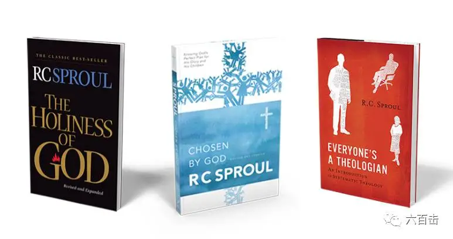

昨天上帝的仆人R·C·史普罗因慢性阻塞性肺病荣归天家。
R·C·史普罗是美国长老会教会的美国神学家 ，作家，以及牧师。
他是利戈尼尔事工（Ligonier Ministries）的创始人和主席，这个机构帮助基督徒了解他们的信仰，如何生活以及如何分享。
R·C·史普罗也是斯普劳尔博士开发Tabletalk杂志执行总编，帮助读者理解圣经，并将真理应用到他们的生活中。
1994年他发起了“更新你的思想”每日广播节目，通过这个节目来帮助数百万听众成长，以了解上帝和他的真理。
二十多年来，R·C·史普罗领导了“改革研究圣经”的发展和修订工作。在他的监督下编写的最新版本，包含了七十五位杰出的牧师和学者的新的神学概要和贡献。
同时他也是佛罗里达州圣安德鲁礼拜堂的联合牧师，史普罗为基督服务了六十多年。当福音受到威胁时，史普罗不知疲倦地捍卫上帝的恩典以及上帝圣言的可靠性，他对事实的大胆立场表明了他对上帝主权的信心。
史普罗的《认识预定论》、《神的圣洁》、《教我如何不信他》以及“伟大的国王系列绘本”更是产生了广泛而深远的影响。

今天我将官方追思网站的一些内容翻译出来，让我们更加认识R·C·史普罗，希望我拙劣的英语水平不会影响大家的理解。
Ligonier Ministries主席W. Robert Godfrey博士：
我们的创始人， 史普罗博士于2017年12月14日荣归天家。他在家人的身边很安详地离开了。我们为他的离开而悲伤，但是因着福音的大能和应许又深得安慰，这也是史普罗一直教导我们的。
史普罗是一位基督的仆人，他拥有极高的恩赐，并为上帝的荣耀将自己献上。他的许多书和文章，他的赞美诗，他的讲课和布道都展示了他的智慧和坚定的信仰。
在很多方面，史普罗都不能被取代，他的恩赐是罕见的。当我们想到这一点，我们的失落感就加深了。
然而， 史普罗认为，虽然他的人生将会终结，但他所从事的这么多年的工作还需要继续下去。他一直是加尔文主义的跟随者。他最近知道自己健康状况正在下降。 他仍然和利戈尼尔、他的家人以及其他亲密的人一起，认真思考如何继续帮助人们认识上帝。 他想找到一种方法来继续高举基督的工作，教导圣言，建立上帝的子民，帮助世界各地的教会执行他们的事工。
请在这个困难的时刻为我们所有人祷告，包括史普罗家族。同时也请为圣堂安德鲁礼拜堂的会众祈祷，我们需要基督的安慰和力量。
请也祈求我们有智慧，我们需要忠心，为基督的缘故做好未来的计划。我们的损失是巨大的，但我们不能专注于我们的损失。如果我们这样做了，史普罗会以可爱的方式对我们说：“你们怎么回事，我们必须把注意力集中在我们的上帝身上，他的力量在我们的软弱中得到了彰显。”
我们需要把重点放在摆在我们面前的非同寻常的机会上，传播上帝的圣洁和主权以及基督福音的信息和圣经无误的权威。在一个道德破裂，真理受到攻击的世界里，我们需要全心全意地爱上帝。
约翰·麦克阿瑟：
今天，我的朋友，真理和神学巨人的共同捍卫者，正站在他所爱的和忠实的主的面前。 在每次重大的神学争论中，RC Sproul和我一起战斗了好几十年，我将非常想念他。
W.罗伯特戈弗雷：
在所有可以而且应该用来形容他的生活和事工的形容词中，最适合的是“忠心” 。 他透过事工和全面的神学知识有力地捍卫了信仰。
史蒂文J.劳森：
虽然他现在不在我们这里，但是他的信念和他的言语忠告的仍然持续影响着我们， 这个非凡的信仰遗产留在我们中间。
德里克WH托马斯：
这是一个学者传教士，他有着惊人的天才和恩赐，他明白什么是圣经的核心，并终生用用激情去传达。
约翰·派珀：
很容易爱RC Sproul。 我相信我亏欠他的远超过我想到的， 如果没有RC的影响，我对上帝圣洁和圣言真理的敬畏将完全不一样。
下面是R·C·史普罗的证道视频，让我们一同来纪念R·C·史普罗。
史普罗讲上帝的神圣
点击阅读原文
可跳到史普罗相关书籍购买通道
相关推荐：
袁立，挺住！ | 这是一个无法认错且难有饶恕的世界
南京大屠杀80周年：我们当记住这位拯救25万中国难民的“东方辛德勒”
《至暗时刻》| 永不！永不！永远都不要放弃！
《潜行者》 | 这是全人类绝无仅有的电影了
《乡愁》 | 没有一个人能够将信仰拍的如此诗意和凝重
这里没有挑逗你眼目情欲的小鲜肉
也没有挑动你肉体情欲的段子
更没有膨胀你今生骄傲的鸡血
我们只在乎那些最质朴真诚的作品
在那里我们才能恢复真正的想象力
我们也坚信这才是我们真正需要的

ID:Six_hundred_hits
长按二维码，一键关注
【六百击】
-END-
电影评论
尽情分享朋友圈

苹果打赏通道